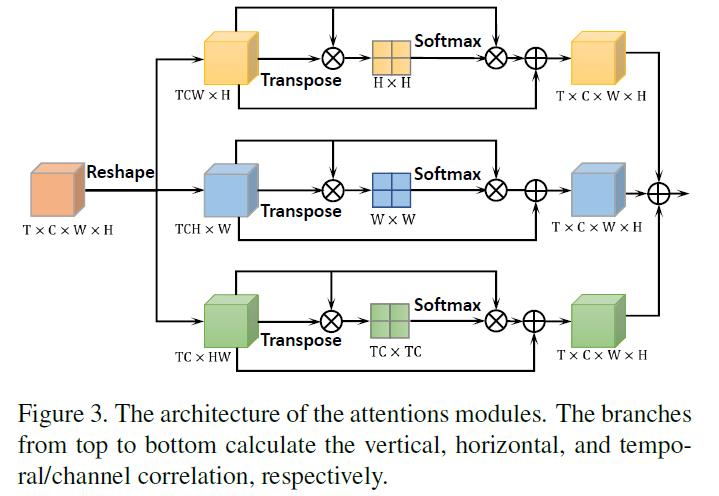
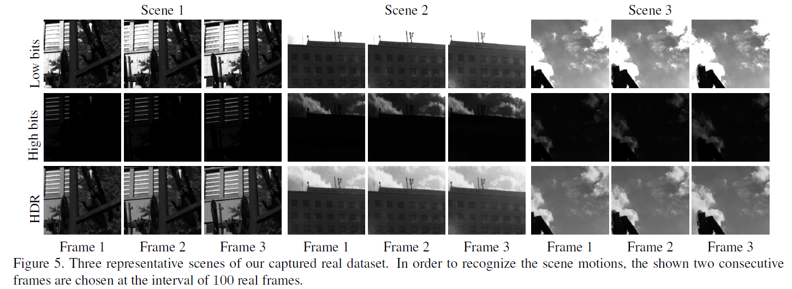

Learning to Reconstruct High Speed and High Dynamic Range Videos from Events
Learning to Reconstruct High Speed and High Dynamic Range Videos from Events
Abstract：
现有工作遭受unrealistic artifacts，或者不能提供有效的高帧率。本文中，我们提出了一个循环卷积网络重构高速HDR视频，带时序一致性损失。此外，我们还搞了一套原型光学系统，采集高速HDR的真实世界数据集。很快公开，sota？
代码在这：[jackzou233/EventHDR: This is the implementation and dataset for Learning To Reconstruct High Speed and High Dynamic Range Videos From Events, CVPR 2021, by Yunhao Zou, Yinqiang Zheng, Tsuyoshi Takatani and Ying Fu (github.com)](https://github.com/jackzou233/EventHDR)
虽然没有代码
Method:
以前的方法能处理HDR的场景，而不能生成标准的HDR图像，因为只是差分信息，而不是绝对的场景强度，因此会受artifacts影响。事件流：，HDR GT：，表征方式：voxel grid，分极性分别堆叠， 时间里有个事件。
3.3 Network Architecture：
模型输入为个连续的事件voxel garid 来建立t时刻的HDR帧。在我们的网络中，不同事件帧的特征被融合，并通过循环记忆状态随事件序列一起传递。我们还提出了新型的一致性损失，来保证时间维度上的连续性。我们的网络包含一个特征共享提取器（shared feature extractor），一个基于可变卷积（deformable convolution）的对齐模块（alignment module），一个循环卷积融合和重建模块，以及一个预训练的一致性损失模块。
Shared feature extractor：
在这一模块，事件帧被下采样到低空间分辨率的特征空间，其灵感来自于视频增强方法，其中使用SFE/编码器将输入数据转换为特征图的有效性已被证明。事实上，SFE可以将连续的帧编码到相同的特征空间中，这有利于后续的对齐模块。我们简单的用几个strided卷积层将帧编码到特征空间中，得到2N+1个输出特征映射。
Deformable convolution based alignment:
之前的事件到图像的重构方法利用光流来对其不同的帧，或者使用光流warping损失来缓解时间不连续性。然而，获取准确的光流是困难的，且错误的光流估计会导致motion artifacts，我们参考[35]使用金字塔可变卷积（pyramidal deformable convolution）来进行特征对齐，通过学习正常卷积的偏移量来获得对齐的特征。
在对齐模块中的，我们的目标是将不同事件帧的特征对齐到中心帧，假设一个卷积核有K个locations，3x3的话k就是9，得到一个regular grid ，这个grid表示普通卷积运算的位置。对于输出feature map的每个位置 ，对齐特征可以表示为：
其中 表示 的每个location的权重， 和 表示可变形卷积中第n个位置的pre-specified(预先指定)的offset(偏移量)和可学习的偏移量，与普通的卷积层相比，上式说明了一个简单的可变形卷积层的操作，即在一个额外偏移量 上采样卷积。
为预测第个可学习的偏移 ，将帧 与中心帧 的特征发送到预测偏移的operation ，可以被表示为：
我们采用金字塔处理和级联refinement来扩大偏差的感受野，并像[35，39]一样对齐更大的movement。具体来说，假设金字塔结构由L层组成，通过对第l-1层特征 以2倍的跨步（strided）卷积对第l层的特征 进行下采样。
获得了所有的L层特征后，我们从上采样的第l+1个偏移量和第l个金字塔特征计算l层的偏移量，如下图所示，整个过程可以被理解为：
其中 表示双线性上采样操作，这样，l层对齐特征可以表示为：
式中， 是生成对齐特征的卷积层，Dconv是1式中提到的可变卷积，通过这种方法，我们获得了第一个金字塔层对齐特征 ，我们用参考系（reference frame）中的特征来从 中生成最终的对齐特征 。对于每一帧T，我们能够获得对应的对齐特征，如下图所示：在该例子中，L=3。
Attentive fusion and reconstruction：
通过基于可变卷积的对齐模块，我们得到了T个对齐特征，将其stack成一个 的特征，chw都是事件帧的size，然后引入注意力机制，广泛运用于语义分割等高层任务，以进一步跟踪空间与时间上的依赖。考虑到注意力模块计算复杂，我们分别使用高度，宽度和时间/通道注意力块，在三个维度上利用特征相关性。三个注意力模块单独工作，对他们的特征求和，得到融合的特征图，如下图所示：

随后，获得的特征图传入循环残差网络，重构出HDR帧。用ConvLSTM搞点时序。
Temporal consistency loss：
用光流的不好，光流不精确，我们搞了个新的。有些工作[19,32]分析两连续sharp帧之间的强度变化可以用事件的积分来表示，因此，给俩连续gt帧，，可以反求出事件帧：
其中表示帧与事件之间的积分关系，可以把C看成一个类似于ESIM的进程，从训练数据中得出会更加精准。我们用Unet结构的cnn来学习帧到事件的映射，该网络进行了预训练，作为时序一致性损失模块，可以表示为：
3.4 Learning Details：
给出重构的视频序列和对应的ground truth，这俩直接l1，辣鸡，所以用lpips，最后损失为：
我们根据经验设置，训练时，我们的网络由kaiming initialization 初始化，用adaptive moment estimation 自适应矩估计方法使损失最小，我们设置动量参数为0.9。学习率初始化为10e-4，每50个epoch除10，batchsize为4，训100个epochs。
4. Experiments：
在本节中，我们首先描述用于真实HDR视频和事件采集的成像系统。然后，我们提供了详细的模拟和真实数据，以及我们的实验设置。然后，对定性和定量的比较结果进行评价。最后，我们进行了消融实验研究。
4.1 A RealWorld HDR Video and Events Imaging System：
配对真实数据集，从未有人做过。因为高速难，对齐也难。in general，我们使用一个事件相机capture事件流，用两个高速相机capture同步的LDR帧，然后合并成HDR帧。通过精心设计的系统将这些摄像头仔细对齐，得到成对的事件流和高速HDR-GT。
设计如下图所示：
场景光线首先经过一个relay lens，然后利用一个分光器Thorlabs CCM1-BS013分光，其中一路进入DAVIS346捕捉事件信息，另一路又经过一个分光镜，分两路，到两个高速相机Photron IDP-Express R2000捕获同步视频，然后再用[3]的方法将不同曝光下的LDR生成HDR图像。我们用一个Thorlabs ND513B neutral density (ND) filter来削弱入射光强度，ND滤波器可以沿空间和光谱维度均匀地遮蔽光的能量。通过这种方法，我们获得两幅不同场景光照强度下的LDR图像，避免了capture高速视频时难以控制的两幅图像的交替曝光。ND滤波器过滤95%的scene irradiance。相机捕获8-bit，merging之后12-bit HDR，对于硬件中的三个摄像头，视场是严格对齐的，时间戳由专门设计的电路控制，如上图bc所示。帧率2000fps。
数据集：
模拟数据集：王霖 2019 GAN 29挑15个训练
真实数据集：自己获取的 12个经典室外场景，都是大动态，普通相机过曝或不足。每个视频3.8s 7680帧，2000fps。随机挑8个当训练集，剩下测试。下图为配对的数据集，帧率巨高，两帧间事件不多，所以取5个相邻帧的事件，overlap一下，还是2000帧的真实数据。

实验设置
我们对比了几个老方法，HF，E2VID和EF(E2VID+)。用PSNR，SSIM和LPIPS还有TC损失作评估。
实验结果
下表是在模拟数据集上的实验结果，只能说薄纱（王霖的模拟数据集）。
下表是真实数据集上的实验结果，一样薄纱。
消融实验
为了验证TC loss和卷积LSTM的影响，我们做了消融实验，下表是消融实验的结果。
根本没开源！辣鸡